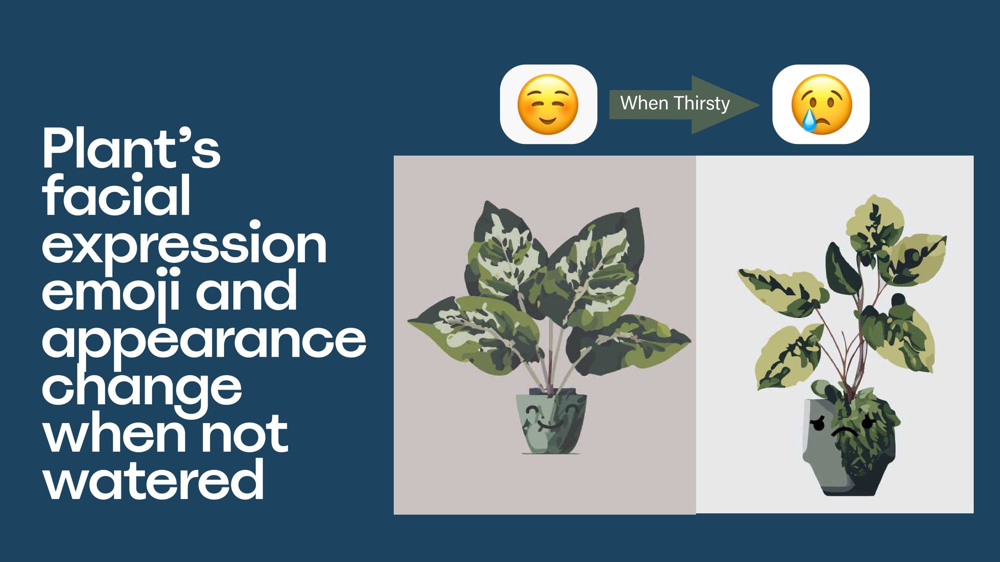
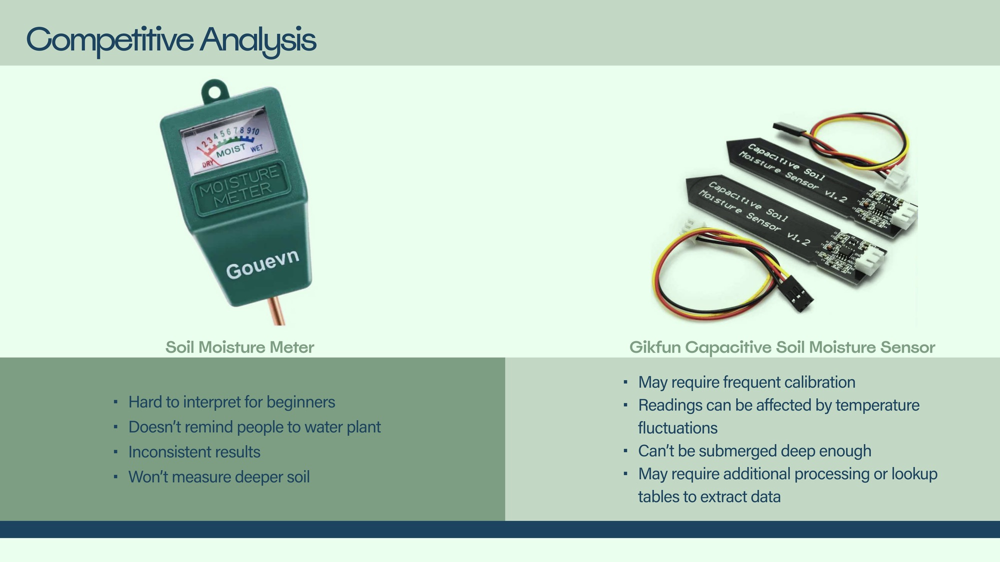
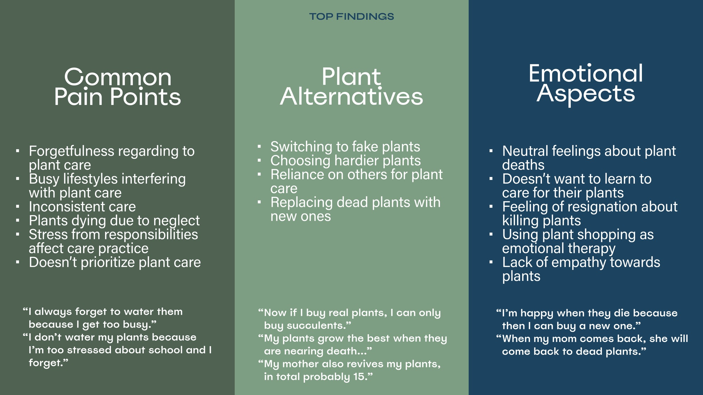
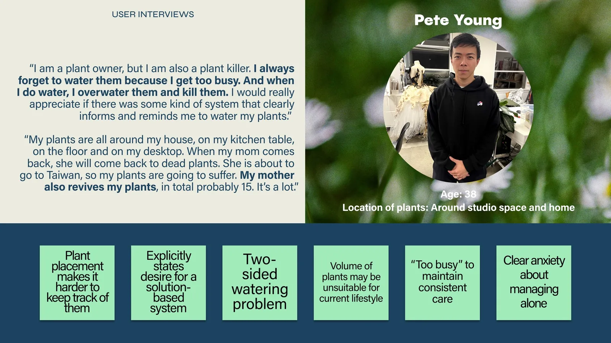
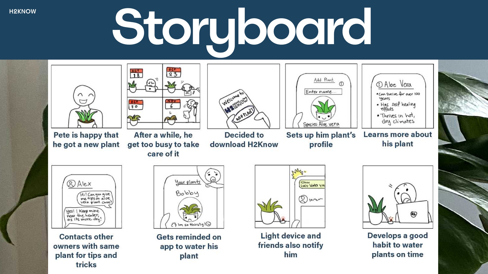
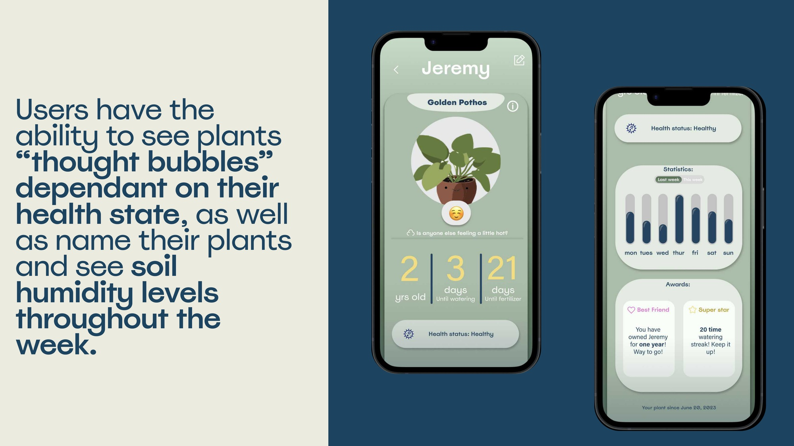
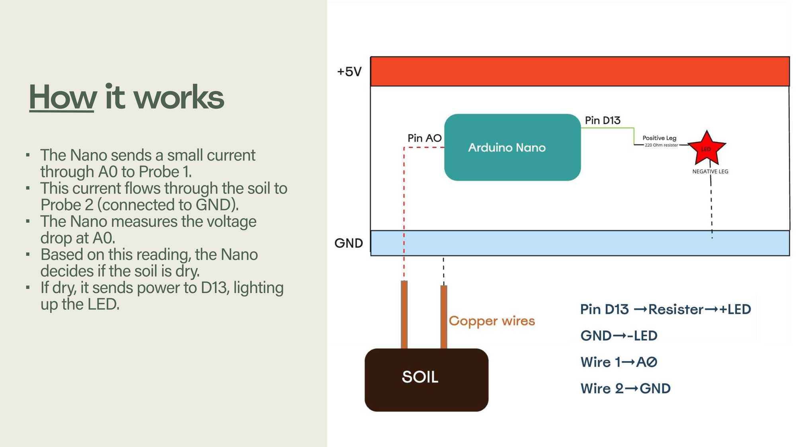

H2Know

Solo Designer · 6 weeks · 2024

A plant can't tell you it needs water.
Last year, Americans spent over $48 billion on indoor plants. Yet 67% of plant parents admit to killing at least three plants in the past year (Live Science, 17 April 2007).

The sensors people buy don't help beginners.
Smart pots cost $60–120, moisture meters spit out numbers you can't read, and reminder apps nag you like every other notification. Three plant owners each told a version of the same story: their plants died because the relationship had gone cold.






Guilt, ownership and reward each became a feature.
Guilt makes absence visible, ownership gives each plant a name, a species and a birthday, and reward makes care pay off. When the soil goes dry, the LED, the app icon and the Friends feed all flag you at once.


A soil sensor and an app work as one system.
An Arduino Nano with a capacitive soil moisture sensor detects dry soil and signals with an LED. It pairs with a five-screen companion app, and the whole physical layer is a kit of about $15.

Five screens, each built around one motivation lever.
In this app concept, Home gives each plant a face that goes from happy to sad with the sensor data, and Plant Detail counts days until watering. Friends flags late watering and congratulates streaks, and points unlock real coupons.



The naming mechanic needed more time.
Naming could be a small ritual.
In the prototype I made naming a plain text field on the setup screen. Framed as a small ritual, the ownership lever would kick in from the very first tap.
Hardware and software need to be co-designed.
I built the Arduino prototype and the Figma app in separate phases. Next time I'd prototype the physical and digital sides side by side from week one.
Two features didn't make the build; both would have changed the testing.
A plant locator map and a propagation gifting system both go straight at the out-of-sight problem. I'd build both in v2.
How it was made
Circuit
The Nano passes current from A0 through Probe 1, the soil and Probe 2 to GND. Voltage drop at A0 determines moisture. When dry, D13 powers the LED via a 220Ω resistor. USB powered, no cloud dependency.

